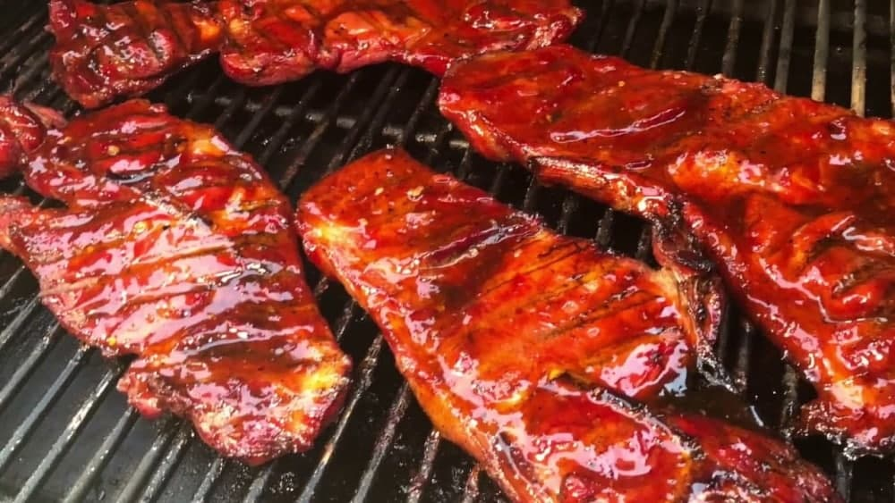

Pork Stake with smoky corn

Ingredients
- 4 tsp tomato ketchup
- 2 tbsp dark muscovado sugar
- 1 tbsp white wine vinegar
- 1 tsp paprika
- 4 pork loin steaks, trimmed of any fat
- 4 corn on the cobs
- 1 tbsp butter
Instructions
- Boil a large pan of water for the corn. Make a sauce by mixing the ketchup, sugar and vinegar with
half the paprika. Heat a non-stick frying pan, then brown the pork for 3-4 mins on each side.
Spoon over the sauce halfway through cooking and turn the steaks in it until the pork is cooked
through and sticky.
- Meanwhile, tip the corn into the boiling water and cook for 5-8 mins until tender. Stir the
remaining paprika into the butter in a heatproof bowl and microwave on High for 15-20 secs until
the paprika is sizzling in the melted butter (alternatively, just melt the smoky butter in a small
pan). Drain the corn, brush over the butter, then serve with the sticky pork steaks and a green
salad.